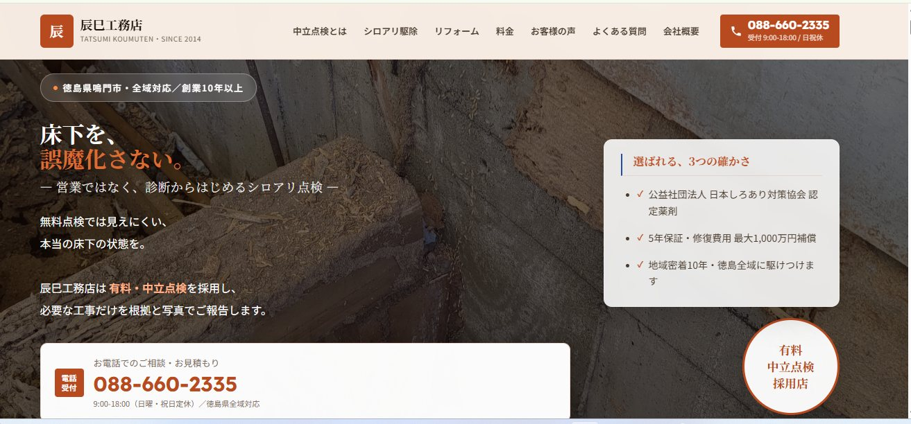
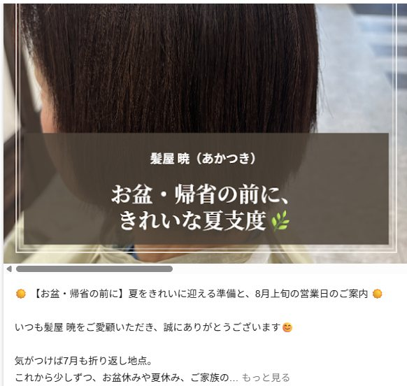

HP制作からGoogleビジネスプロフィール運用・口コミの仕組みづくりまで。
「自分で更新できる」自走型の集客体制を構築した事例です。

株式会社辰巳工務店様（徳島県鳴門市）。 シロアリ駆除・床下点検・リフォームを手がける工務店様で、 「有料・中立点検」という他社にはないポジショニングを大切にされています。
月次でGoogleビジネスプロフィールの投稿・改善提案を継続し、 施工事例の更新もご自身でできるよう伴走型でサポートしました。
「前回に引き続きとても迅速丁寧な対応をしていただきました。 更新の操作方法などはわかりやすく教えていただいたおかげで、自分で更新できるようになりました」
検索数5.6倍・電話問合せ3.5倍。
臨時休業がある中でも過去最高の集客と、お盆前の「ほぼ満席」を実現したローカルMEO戦略。
髪屋 暁（かみや あかつき）様（静岡県富士宮市・美容室）。 髪質改善（きらがみ）、ザクロペインター、完全バリアフリー構造が強みのサロンです。

「いつもお客様を惹きつけることができる内容を作成して頂きありがとうございます」
「これだけの結果を出していけるのはご協力頂いているおかげであります。ありがとうございます。今後もよろしくお願い致します」
適切に育てられたGBPは、臨時休業中でも24時間働く「店舗の営業マン」として機能します。 数値的なMEO対策だけでなく、オーナー様の想いを言葉と画像で可視化する、二人三脚の運用を行った事例です。
フォロワー0から約3,000人へ。
「発信」で終わらず、55,000円の有料セミナー申込みにもつながるX運用へ。
2024年1月、フォロワー0の状態からXアカウントの運用をスタートしました。
単にフォロワーを増やすのではなく、認知 → 興味 → 信頼 → 申込みまでを意識した運用を行った事例です。
約30フォロワーから約2,200フォロワーへ（約73倍）。
経営者の専門性を発信するX運用を約1年間支援。
BtoB企業の代表取締役のXアカウントを、約30フォロワーの段階から約1年間にわたり支援しました（2024年9月〜2025年8月）。 経営者本人が持つ事業への考え方や経験、業界に関する専門知識を整理し、Xで伝わりやすいコンテンツへ。
単なるサービス紹介に偏るのではなく、経営者自身の視点や専門性、人柄が伝わる発信を意識し、 投稿企画・ライティング・継続的な運用改善を行いました。
約300フォロワーから約1,500フォロワーへ（約5倍）。
広報・PRの専門性と、本人の人柄が伝わる発信へ。
約300フォロワーの状態から運用を開始。 広報・PRの専門性と本人の人柄が伝わる発信を設計し、 約10か月間にわたり投稿企画・コンテンツ制作・運用改善を支援しました。
専門性の高い海外コンテンツを、日本のユーザーに「伝わる発信」へ。
2026年3月より、スポーツ関連企業の日本公式Xアカウント運用を継続支援。 投稿企画・ライティング・リライト・分析・改善提案に加え、 海外本社が発信する専門的な記事・動画・研究内容を、 日本のユーザーにも理解しやすい形へ翻訳・再構成しています。
商品紹介だけではなく、トレーニング理論、データ分析、動作改善などの 教育的なコンテンツを組み合わせて発信しています。
「売るためのSNS」だけではなく、専門性やブランド価値が蓄積されるアカウント運用を意識した事例です。
現状の整理からで大丈夫です。お気軽にご相談ください。
相談・お問い合わせはこちら